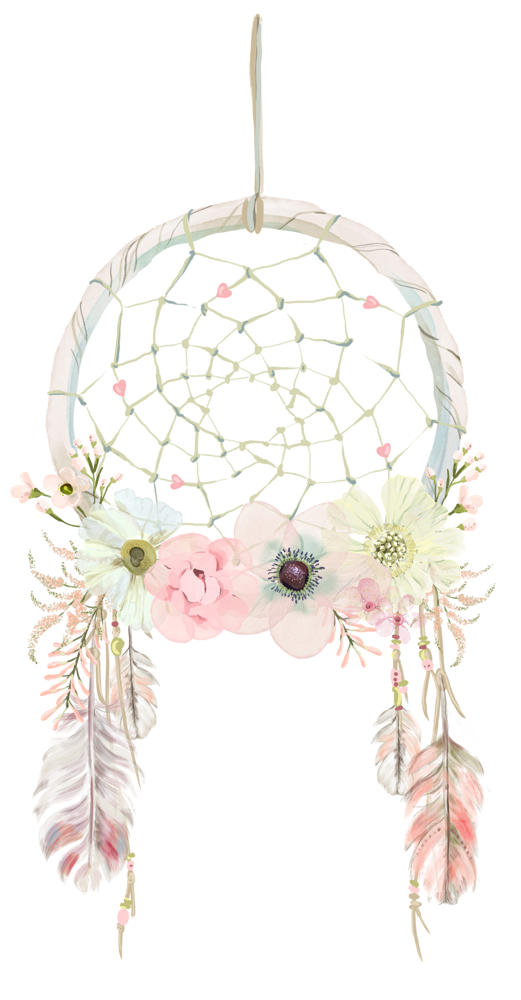
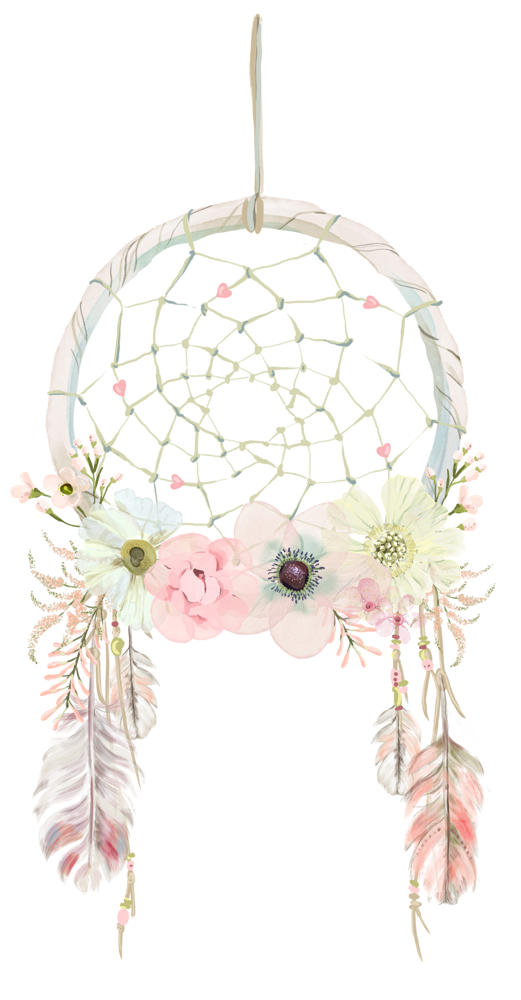

Фенечка (предположительно, от англ. thing — «вещь, штука») — браслет ручной работы из бисера, кожи, шнурков, лент или ниток (преимущественно мулине). На нашем сайте мы рассмотрим плетеие фенечек из мулине. Дальше - больше!
Самодельные декоративные браслеты, даримые как символ дружбы (friendship bracelet — «браслет дружбы») получили распространение в среде хиппи, и стали широко распространенным явлением в США в 1970-х. Такие браслеты (в русской традиции — «фенечки») являлись способом самовыражения хиппи, считающих себя «детьми цветов» (отсюда любовь ко всему яркому, цветастому), и были неотъемлемой принадлежностью хиппи.
Также использовались вместо обручальных колец. Такие обручальные фенечки часто плелись одинаковыми и дарились друг другу. Редко встречаются «бродячие» фенечки, которые неоднократно передаривались. Такие фенечки имеют длинный список предыдущих владельцев и могут обойти целую страну и даже попасть в другую.
 
